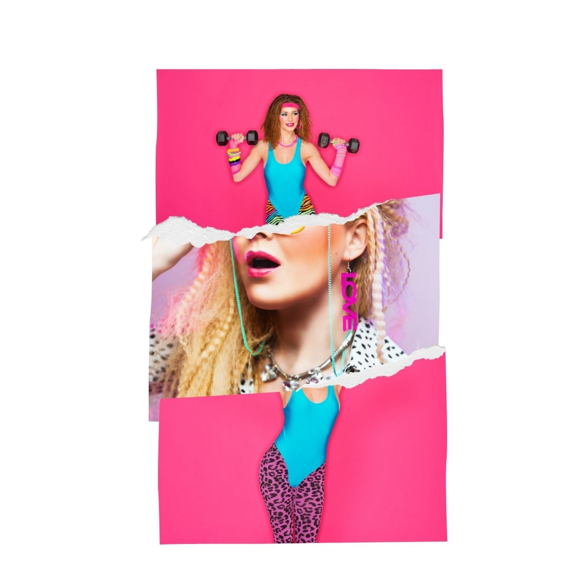
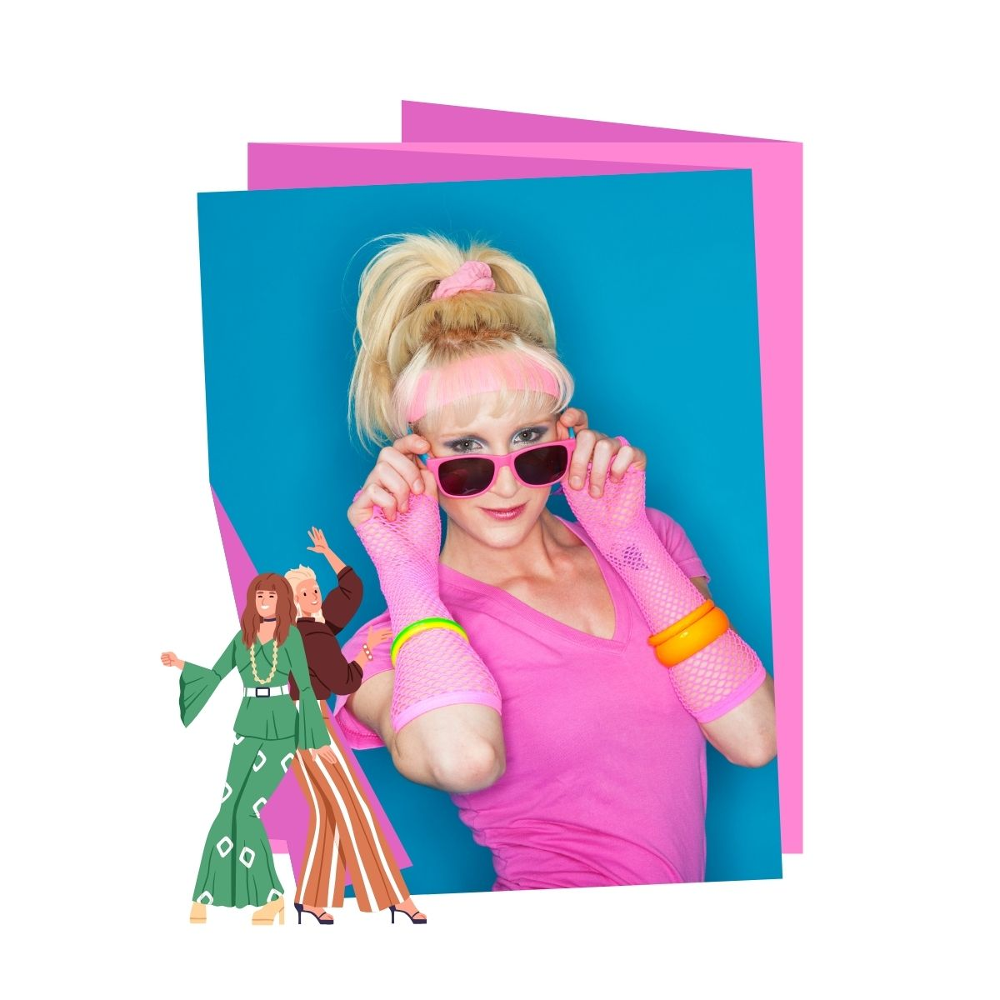

A moda dos anos 1980 foi marcada por estilos extravagantes e ousados, com destaque para ombreiras, cores vibrantes e roupas de modelagem ampla.
O uso de tecidos brilhantes, estampas chamativas e acessórios grandes refletia a influência da música pop, da televisão e da busca por individualidade e poder na moda.

Os homens adotaram ternos com ombreiras, jaquetas de couro, calças de cintura alta e peças esportivas. O visual masculino transmitia confiança, modernidade e influência da cultura pop.
Em resumo, a moda dos anos 1980 representava uma era de exagero, criatividade e expressão pessoal, com tendências que valorizavam o impacto visual e a originalidade.
